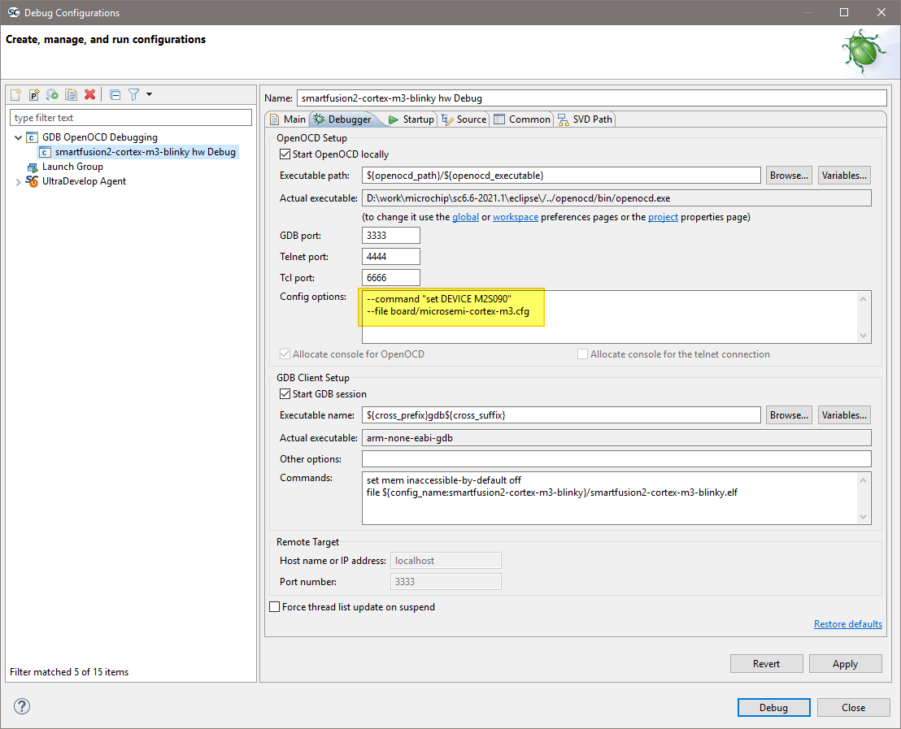
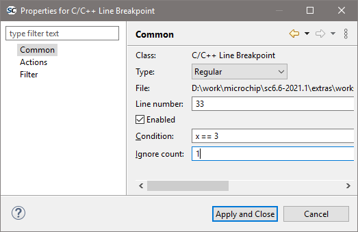

Debugging¶
Debug launch configurations¶
To debug a program a debug launch configuration must be created. Most of the default settings for a debug launch configuration can be left as they are but a few needs to be manually configured. Use the example projects and debug launch configurations as a guide to creating new debug launch configurations.
Select the project in the Project Explorer and from the:
In the Debug Configurations dialog select GDB OpenOCD Debugging and click on the New launch configuration button which will create a new debug launch configuration for the previously selected project.
For PolarFire SoC Renode emulation please refer to the README provided with the PolarFire SoC/PSE example project(s) in the example workspace.
On the Main tab ensure that the
C/C++ Applicationfield contains the correct executable name.Note
Using forward slashes in paths here aids portability of projects and debug launch configurations between Windows and Linux:
On the Debugger tab, it is critical that the Config options field contains the correct command line options/script to be passed to OpenOCD. The example settings here work for SmartFusion or SmartFusion2 targets where the program uses only eSRAM and/or eNVM – if the
DEVICEsetting is modified to match the actual target device (SmartFusion A2FXXX or SmartFusion2 M2SXXX where XXX is the three-digit device size designator). Further details about these options are provided elsewhere in this documentation.--command "set DEVICE ..."
is mandatory for SmartFusion and SmartFusion2 Cortex-M3 targets but is optional for Cortex-M1 and Mi-V RISC-V targets.
For a Cortex-M1 target the
Config optionsshould be:--file board/microsemi-cortex-m1.cfg

For a RISC-V target the Debugger tab settings must be configured as follows:
![digraph { graph [rankdir="LR", ranksep=.01, bgcolor=transparent]; node [fontname="Verdana", style=filled, fillcolor=white, fontsize="9", shape="rectangle", width=.1, height=.2, margin=".04,.01"]; edge [arrowsize=.7]; "Debug Configuration" -> "OpenOCD Setup" -> "Config options"; }](../_images/graphviz-511c55f377b13c926f8eb3c07a7a9d60175faa17.png)
--file board/microsemi-riscv.cfg
or when targeting the HiFive Unleashed Platform using the integrated FTDI JTAG debug probe (rather than FlashPro):
--file board/microsemi-sifive-hifive-unleashed.cfg
set mem inaccessible-by-default off set $target_riscv = 1
Important
This is necessary even if there are some cases where it seems to work correctly (and previous SoftConsole examples did not require this command)!
Additionally setting the architecture (do not remove the previous commands such as set $target_riscv = 1):
set architecture riscv:rv32
Note
If in previous documents and projects was
set arch riscv:rv32used, then it can be considered as analogous. Thearchis an abbreviation forarchitectureand does the same function.And when targeting 64-bit PolarFire SoC emulation model:
set architecture riscv:rv64
Note
If in previous documents and projects was
set arch riscv:rv64used, then it can be considered as analogous. Thearchis an abbreviation forarchitectureand does the same function.When the binary elf file is large then it might sometimes on targets cause a timeout message, to suppress these the timeout can be changed:
set remotetimeout 7
Existing workspace examples should be used to see how these are configured:
On the
Startuptab the default settings should be configured as shown below and these are the default settings so do not change them unless necessary and you understand what effect these changes will have.Load symbols/executable should be configured as shown.
Even when targeting embedded or external RAM:
![digraph { graph [rankdir="LR", ranksep=.01, bgcolor=transparent]; node [fontname="Verdana", style=filled, fillcolor=white, fontsize="9", shape="rectangle", width=.1, height=.2, margin=".04,.01"]; edge [arrowsize=.7]; "Debug Configuration" -> "Runtime Options" -> "'Debug in RAM' should always be disabled"; }](../_images/graphviz-e9f92113614b9947a013803b1d4721d202507d63.png)
In the section:
set breakpoint at main and
Continueshould normally be checked although can be modified if, for example, an initial breakpoint somewhere other than main() is required or startup code executed beforemain()needs to be debugged.For PolarFire SoC Renode emulation please refer to the README provided with the PolarFire SoC/PSE example project(s) in the example workspace.
By default the
Save asis set to:Local filecauses the debug launch configuration to be saved into the workspace. However, if theShared fileoption is selected (the default name can be accepted) then the debug launch configuration instead gets saved into the project which aids portability as it means that the debug launch configuration moves in tandem with the project (e.g. when copying or exporting/importing the project).![digraph { graph [rankdir="LR", ranksep=.01, bgcolor=transparent]; node [fontname="Verdana", style=filled, fillcolor=white, fontsize="9", shape="rectangle", width=.1, height=.2, margin=".04,.01"]; edge [arrowsize=.7]; "Debug Configuration" -> "Common" -> "Save as" -> "Shared file"; }](../_images/graphviz-3cb3c3ea7e5747e113da515ba857171e3c0db80d.png)

OpenOCD command line options and scripts¶
As explained above, it is important that the correct command line options/scripts are passed to OpenOCD via the:
This section explains these settings.
Note
All
--command ...settings mentioned below must be placed before the--file ...setting.Commands can be specified using
--command ...or-c ....Multiple commands can be specified individually
--command "set DEVICE M2S090" --command "set JTAG_KHZ 1000"
or together separated by semi-colons
--command "set DEVICE M2S090; set JTAG_KHZ 1000"
SmartFusion/SmartFusion2 DEVICE¶
For SmartFusion and SmartFusion2 the target device must be specified using --command "set DEVICE <devicename>".
For SmartFusion the target device must be set using --command "set DEVICE A2FXXX" where XXX is one of
060, 200 or 500.
For SmartFusion2 the target device must be set using --command "set DEVICE M2SXXX" where XXX is one of
005, 010, 025, 050, 060, 090 or 150.
Board scripts¶
The board script describes the relevant aspects of the target hardware to OpenOCD. A number of example scripts
are provided and are stored in <SoftConsole-install-dir>/openocd/share/openocd/scripts. The
following list enumerates these and outlines the context in which each of them can be used. Remember that the
target device must also be correctly specified in the debug launch configuration.
RISC-V
board/microsemi-riscv.cfg: for targeting RISC-V.board/microsemi-sifive-hifive-unleashed.cfg: for targeting the HiFive Unleashed Platform
SmartFusion/SmartFusion2 Cortex-M3
board/microsemi-cortex-m3.cfg: for SmartFusion or SmartFusion2 programs that target only eSRAM or eNVM.
SmartFusion2 Cortex-M3 only
board/microsemi-smartfusion2-eval-or-starter-kit-ddr.cfg: an example script supporting a specific SmartFusion2 MDDR configuration on the SmartFusion2 Evaluation Kit, Security Evaluation Kit or either of the Starter Kit boards. For use when downloading to/debugging from MDDR.board/microsemi-smartfusion2-dev-kit-ddr.cfg: an example script supporting a specific SmartFusion2 MDDR configuration on the SmartFusion2 Development Kit or Advanced Development Kit boards. For use when downloading to/debugging from MDDR.board/microsemi-smartfusion2-dev-kit-ddr-ecc.cfg: an example script supporting a specific SmartFusion2 MDDR configuration with ECC enabled on the SmartFusion2 Development Kit or Advanced Development Kit boards. For use when downloading to/debugging from MDDR with ECC enabled.
Cortex-M1
board/microsemi-cortex-m1.cfg: for targeting Cortex-M1. Explained in the next section.
Note
For more information about SmartFusion2 MDDR external RAM support see elsewhere in this document
and in the <SoftConsole-install-dir>/extras/smartfusion2-mddr folder in the SoftConsole
installation.
The following outlines the normal correlation between the linker script used to link the program and the OpenOCD board script used for debugging:
RISC-V Hardware Abstraction Layer (HAL) and PolarFire SoC MPFS_HAL (previously known as PSE_HAL)
Linker Script
Refer to the Mi-V RISC-V HAL, PolarFire SoC MPFS HAL and the various RISC-V example projects provided for details of the example linker scripts provided.
OpenOCD board script
board/microsemi-riscv.cfg
SmartFusion2 CMSIS Hardware Abstraction Layer Cortex-M3
Linker script |
OpenOCD board script |
|---|---|
|
|
|
|
|
N/A - not for interactive debugging |
SmartFusion CMSIS-PAL Cortex-M3
Linker script |
OpenOCD board script |
|---|---|
|
|
|
N/A - not supported |
|
N/A - not for interactive debugging |
Hardware Abstraction Layer (Cortex-M1/DirectCore)
Linker script |
OpenOCD board script |
|---|---|
|
|
|
N/A - not for interactive debugging |
|
N/A - not supported |
Use the board/microsemi-cortex-m1.cfg board script when targeting a Cortex-M1 based system on chip.
Unlike SmartFusion/SmartFusion2 when targeting Cortex-M1 --command "set DEVICE ..." is not required.
If the Cortex-M1 system includes flash memory, then the board/microsemi-cortex-m1.cfg board script
needs to be modified (or copied and modified) to add this.
The Cortex-M1 can be configured to allow debugging using FlashPro “indirectly” via the FPGA’s UJTAG block or “directly” via general I/O pins carrying the JTAG signals. The board script assumes the former (UJTAG) by default.
To override this and select “direct” debugging add the following:
--command "set FPGA_TAP N"
FlashPro JTAG speed¶
The SoftConsole OpenOCD scripts use a default JTAG clock speed of 6MHz. If this needs to be overridden, then it can be specified (in kHz) alongside the target device – e.g. to use 1MHz (1000kHz):
--command "set DEVICE M2S090; set JTAG_KHZ 1000"
or
--command "set DEVICE M2S090" --command "set JTAG_KHZ 1000"
Warning
Do not change the JTAG clock speed unless absolutely necessary and only if you understand the implications and possible pitfalls of doing so.
Other OpenOCD options¶
In some cases, where OpenOCD debugging does not work as expected it may be useful to add the –debug n (where n is a debug level between 0 and 3) or simply -d option to the debug launch configuration. See also the OpenOCD User’s Guide for other OpenOCD options and commands: http://openocd.org/documentation/.
SoftConsole OpenOCD script parameters¶
Several parameters can be used to configure/control how the SoftConsole OpenOCD scripts operate. Refer to the comments in the example scripts for more details.
<SoftConsole-install-dir>/openocd/share/openocd/scripts/interface/microsemiflashpro.cfg<SoftConsole-install-dir>/openocd/share/openocd/scripts/target/microsemicortex-m1.cfg<SoftConsole-install-dir>/openocd/share/openocd/scripts/target/microsemicortex-m3.cfg<SoftConsole-install-dir>/openocd/share/openocd/scripts/target/microsemiriscv.cfg<SoftConsole-install-dir>/openocd/share/openocd/scripts/target/microsemisifive-hifive-unleashed.cfg
Board configuration for FlashPro debugging¶
Debugging a Cortex-M3 target with the FlashPro JTAG programmer requires that JTAG_SEL is tied high and, where applicable, FlashPro/USB rather than RVI debug access is enabled. If JTAG_SEL is not configured correctly, then debugging will not work.
Using a debug session¶
Launching a debug session¶
Select the project in the Project Explorer, right click on it and from the context menu select Debug As > Debug Configurations, select the relevant debug launch configuration and click Debug.
Memory Monitor¶
The default Memory Monitor view rendering is Hex which may render values in big-endian rather than little-endian form. If this is the case, then switch to Traditional or Hex Integer rendering which renders values properly as littleendian.
Console view¶
During a debug session SoftConsole can display several different consoles in the Console view. By default, the OpenOCD console is displayed showing OpenOCD output:
The highlighted Display Selected Console toolbar button allows different consoles to be selected:

The openocd and GDB consoles are usually the ones of most interest. If semihosting is used the I/O is done via the GDB console. The GDB console must be the active console to manually enter GDB commands.
Built-in serial terminal view¶
SoftConsole includes a built-in serial terminal view which obviates the need to run a separate serial terminal emulator when connecting to a target board using a UART. The plug-ins used to implement this view are preinstalled. Refer to this blog post for information on how to show and configure the terminal view (but skip the parts dealing with plug-in installation as this is already done):
In order for the serial terminal to list the relevant serial/COM ports, especially for USB serial ports, the relevant OS drivers may need to be installed. Refer to the relevant hardware/board documentation for more details.
Debug using a specific FlashPro programmer¶
By default, SoftConsole will debug using the first FlashPro5 programmer that it detects. If there is no FlashPro5 connected, then it will use the first FlashPro3/4 that it detects.
When there is only one FlashPro programmer connected and not used by any other application then SoftConsole will automatically use that. In some cases, more than one FlashPro programmer will be connected in which case SoftConsole needs to be told which one to use for debugging.
A specific example of this is when using the M2S090 Security Evaluation Kit board. On this board J5 is the FlashPro connector normally used for FlashPro programming of the FPGA and SoftConsole debugging. However, J18 is also an on-board SPI only FlashPro5 programmer which can be used for programming the FPGA but cannot be used for SoftConsole debugging. J18 is also used for access to serial ports on the target design.
In this case if both J5 and J18 are connected to the host computer on which SoftConsole is running then SoftConsole needs to be told to use the former for debugging.
When OpenOCD runs, it lists the FlashPro programmers that it finds and indicates which one it uses by default – e.g:
Open On-Chip Debugger
Licensed under GNU GPL v2
For bug reports, read
http://openocd.sourceforge.net/doc/doxygen/bugs.html
M2S010
Info : only one transport option; autoselect 'jtag'
adapter speed: 2000 kHz
cortex_m reset_config sysresetreq
trst_only separate trst_push_pull
do_board_reset_init
Info : FlashPro ports available: usb86709, S200XTYRZ3
Info : FlashPro port used: S200XTYRZ3
To use a specific FlashPro device when there is more than one connected in the debug launch configuration change the following:
--command "set DEVICE M2S090"
--file board/microsemi-cortex-m3.cfg
to this which specifies which FlashPro programmer/port to use for debugging:
--command "set DEVICE M2S090"
--file board/microsemi-cortex-m3.cfg
--command "microsemi_flashpro port usb86709"
A partial port name can be specified and the first FlashPro port matched that starts with the specified string will be used. (The string comparison is case insensitive). This is useful, for example, where there are two FlashPro5 programmers attached – one standalone (e.g. SXXXXX) and one embedded e.g. EXXXXX). In this case the embedded one can be selected by simply specifying:
...
--command "microsemi_flashpro port e"
Note
The microsemi_flashpro_port command must appear after the board script has been specified
because this script sources the interface/microsemi-flashpro.cfg script.
Debugging using a non FlashPro JTAG interface¶
By default, the Microsemi OpenOCD board scripts (e.g. board/microsemi-cortex-m3.cfg) specify that a FlashPro programmer will be used for debugging:
# FlashPro
source [find interface/microsemi-flashpro.cfg]
# Device
source [find target/microsemi-cortex-m3.cfg]
# Board specific initialization
proc do_board_reset_init {} {
}
This is akin to assuming that all boards come with an on-board FlashPro programmer even if some use a discrete/external programmer. This is the normal and recommended debugging setup. In this case the debug launch configuration will look something like this:
--command "set DEVICE M2S090"
--file board/microsemi-cortex-m3.cfg
However, it is possible to use any other JTAG probe that OpenOCD supports. As an example, to debug using the Olimex ARM-USB-TINY-H
In the debug launch configuration put the following:
--command "set DEVCE M2S090; set FPGA_TAP N; set FLASHPRO N" --file interface/ftdi/olimex-arm-usb-tiny-h.cfg --file board/microsemi-cortex-m3.cfg
Ensure that the board’s JTAG_SEL signal is tied low for RVI (for RVI debugging) rather than high (for FlashPro debugging via the system controller).
Connect the Olimex ARM-USB-TINY-H programmer to the board’s RVI connector and the USB end to the computer. Ensure that the required drivers are installed. Debugging can now be done via the Olimex ARMUSB-TINY-H device.
The same approach can be taken with other JTAG programmers supported by OpenOCD.
How to connect to/debug a running program¶
In some situations it is desirable to connect to a program already running on the target without resetting the target, loading the program, executing from the startup code, breakpointing at main() etc. To enable this form of debugging:
The program/project built must match the program running on the target – i.e. the same code, linker script etc.
On the Startup page of the debug launch configuration…
Clear the Initial Reset checkbox
In the Initialization Commands text field enter
monitor haltClear the Load Symbols and Executable > Load Executable checkbox
With these settings when the debug session is launched SoftConsole the program remains running and the Suspend “pause” button can be used to halt it and thereafter normal debugging operations can be performed.
Call stack¶
Normally call stacks can be ignored, but they are very useful when troubleshooting pre-existing conditions. When using the recommended workspace and its Develop and Debug perspective then this should be in the bottom-left section of
the screen. It can be opened (if it got previously closed) with :
![digraph {
graph [rankdir="LR", ranksep=.01, bgcolor=transparent];
node [fontname="Verdana", fontsize="9", shape="rectangle", width=.1, height=.2, margin=".04,.01", style=filled, fillcolor=white];
edge [arrowsize=.7];
"SoftConsole Menu toolbar" -> "Window" -> "Show view" -> "Debug"
}](../_images/graphviz-ffffad17a2f14987122d1b446b96b6e6663f2f5f.png)
The figure above shows how nested the calls are, clicking on each will jump to the exact line of code from where the child stack was invoked and it will even show the content of local variables at that given time. This is very useful when troubleshooting what conditions lead to the given breakpoint. Using it with ISR handlers can show what the application was processing when the IRQ happened. Together with conditional breakpoints which makes debugging even easier.
Conditional breakpoints¶
A conditional breakpoint can be enabled by holding CTRL and double-clicking on a regular breakpoint:

The figure above shows a conditional breakpoint which will break on a second event when variable x is equal to 3. The
first event when this condition is met is ignored because Ignore count is set to 1. This allows to create a complex
condition where the code should break and together with call stack can be troubleshoot why and how this event
happened. Debugging intermittent issues with these features is easier.
Note
This is very useful for both a Renode and HW targets as well.
Troubleshooting¶
If the debug session fails to run as expected, then check the following:
On Linux, was the udev rules file installed and activated in order to grant non-root access to users in the relevant group (usually plugdev)?
Is a FlashPro device connected (FlashPro 5 on Linux, FlashPro3/4/5 on Windows)?
Is there more than one FlashPro device connected? If so SoftConsole may not be using the correct one. If you want to use a specific one of several FlashPro devices connected, then you can add
--command "microsemi_flashpro port <fp-port-name>"to the OpenOCD command line options.On Windows did a previous FlashPro3/4 debug session fail leaving OpenOCD (
openocd.exeorfpserver.exe) running becauseabiactel.dlldid not exit cleanly thus blocking access to the FlashPro device? Check Task Manager/ProcessExplorer for openocd.exe and if it’s still running then unplug the FlashPro USB cable and then reattach it and OpenOCD should terminate.If the debug session starts but the program does not run/behave as expected, then check that the project was updated to match the target hardware by having the Libero SoC generated firmware and
drivers_configcopied in before rebuilding.Ensure that the relevant CMSIS/HAL firmware core is used.